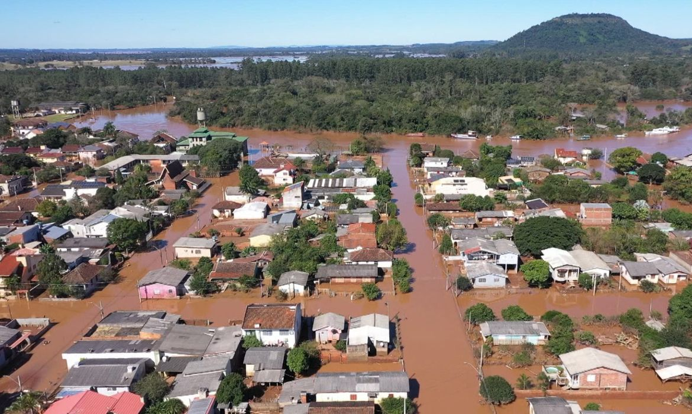
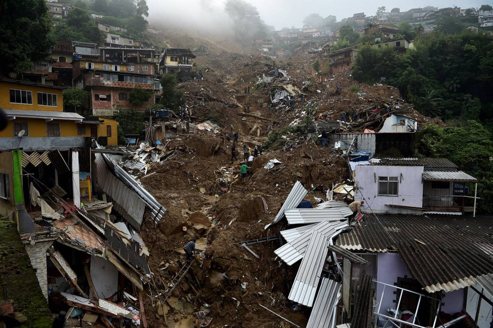
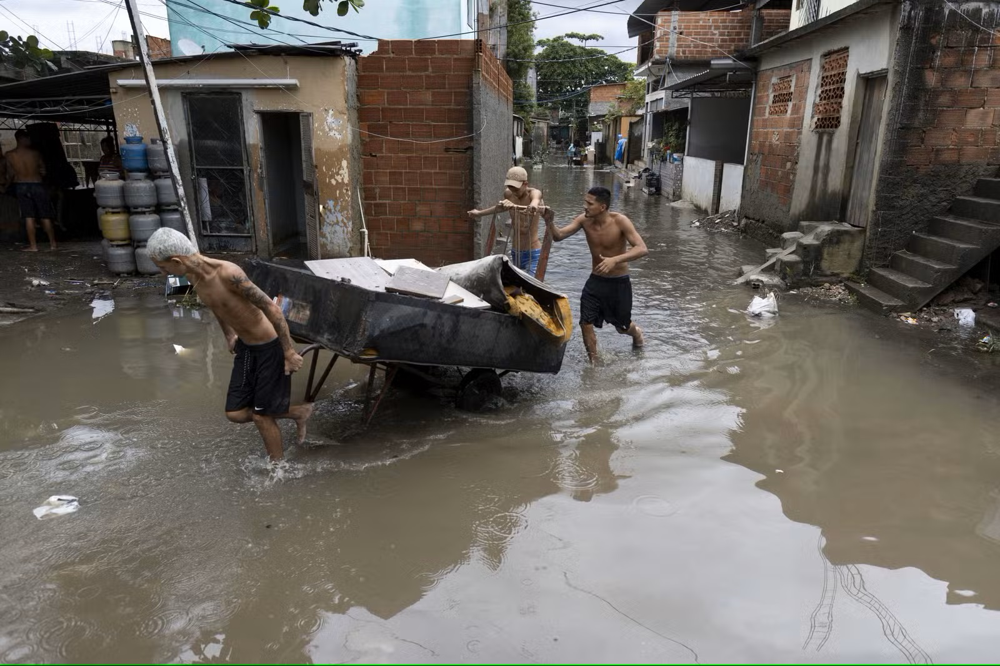

Tecnologia espacial aplicada à prevenção de enchentes
Sistema preventivo inspirado em sensores climáticos, satélites e monitoramento orbital em tempo real.
O Brasil tem um problema crítico com enchentes
Milhares de famílias são afetadas todos os anos por eventos extremos que poderiam ter impactos reduzidos com monitoramento preventivo.
+150 mil
Desalojados por ano
R$ 8 bi
Prejuízos anuais
600+
Municípios em risco
72%
Casos poderiam ter resposta antecipada
Chuvas Extremas
Eventos climáticos severos se tornam cada vez mais frequentes, intensificando enchentes e deslizamentos em áreas urbanas.
Alertas Tardios
Muitas tragédias acontecem porque comunidades recebem avisos tarde demais para evacuar com segurança.
Comunidades Vulneráveis
Regiões periféricas e áreas de risco sofrem com infraestrutura insuficiente e ausência de monitoramento contínuo.
Tragédias Recentes

A maior tragédia climática recente do Brasil
Mais de 400 cidades afetadas, milhares de desalojados e colapso urbano em diversas regiões.

Falta de tempo para reação
Deslizamentos e enchentes causaram centenas de mortes em poucas horas.

Impacto social nas periferias
Comunidades vulneráveis perderam casas, renda e acesso básico após as chuvas extremas.
Tecnologias utilizadas no Sistema Inteligente de Alerta de Enchentes
O projeto combina desenvolvimento web, lógica em Python e prototipagem com Arduino para simular um sistema de prevenção de enchentes.

HTML5
Responsável pela estrutura da página e organização das informações do sistema.
- ▸ Estrutura da landing page
- ▸ Seções informativas
- ▸ Organização de conteúdo

CSS3
Responsável pelo design visual, cores, layout e responsividade da interface.
- ▸ Layout responsivo
- ▸ Identidade visual
- ▸ Organização estética

JavaScript
Adiciona interatividade ao sistema, como simulação de risco, validações e respostas dinâmicas.
- ▸ Simulação de enchentes
- ▸ Validação de formulários
- ▸ Alteração dinâmica da interface
Python
Utilizado para simular o cálculo do nível de risco e modelagem matemática das enchentes.
- ▸ Cálculo de risco
- ▸ Funções matemáticas
- ▸ Simulação de cenários

Arduino (Wokwi)
Simulação de sensores para detecção de nível de água e emissão de alertas visuais e sonoros.
- ▸ Sensor de distância
- ▸ LEDs de alerta
- ▸ Buzzer de emergência
"Tecnologia acessível aplicada à prevenção de desastres urbanos."
O objetivo do sistema é integrar diferentes áreas da computação para simular uma solução realista de prevenção de enchentes, focada em impacto social e segurança.
Para quem desenvolvemos
O sistema foi pensado para atender múltiplos perfis de usuários com necessidades distintas e complementares.
Comunidades Vulneráveis
Moradores de áreas sujeitas a enchentes e deslizamentos que precisam receber alertas antecipados para agir com segurança.
- ▸ Alertas em tempo real
- ▸ Rotas de evacuação
- ▸ Informações preventivas
Defesa Civil
Equipes responsáveis pelo gerenciamento de emergências e coordenação das ações de resposta.
- ▸ Dashboard completo
- ▸ Mapeamento de risco
- ▸ Coordenação de equipes
Órgãos Públicos
Prefeituras e gestores públicos que necessitam de dados para planejamento urbano e prevenção de desastres.
- ▸ Dados estratégicos
- ▸ Relatórios técnicos
- ▸ Tomada de decisão
Pesquisadores
Profissionais que utilizam dados climáticos para estudos, análises ambientais e desenvolvimento científico.
- ▸ Histórico climático
- ▸ Dados de sensores
- ▸ Análises avançadas
O impacto real do sistema
Cada funcionalidade foi projetada para reduzir riscos, proteger comunidades e auxiliar autoridades na tomada de decisões.
Acesso Simplificado
Plataforma acessível por dispositivos móveis, facilitando o acesso às informações críticas.
Monitoramento Contínuo
Sensores e dados orbitais atualizados em tempo real garantem acompanhamento permanente das regiões monitoradas.
Redução de Impactos
Menor número de vítimas, menos danos materiais e maior capacidade de resposta diante de eventos extremos.
Apoio à Comunidade
Integra moradores, Defesa Civil e órgãos públicos em uma única rede de prevenção e comunicação.
Como o sistema funciona na prática
Do monitoramento ao envio de alertas, todo o processo acontece de forma automática para reduzir o tempo de resposta.
Coleta de Dados
Sensores locais e dados climáticos monitoram constantemente as condições ambientais.
Análise Inteligente
A IA interpreta os dados e identifica padrões associados a enchentes.
Envio de Alertas
Comunidades e autoridades recebem notificações instantaneamente.
Evacuação Segura
Rotas seguras e informações preventivas ajudam na proteção da população.